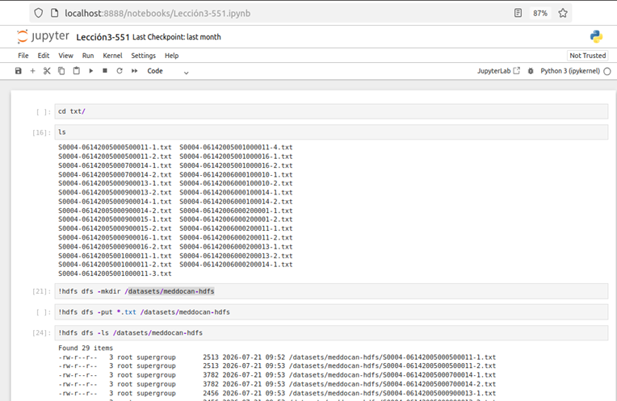
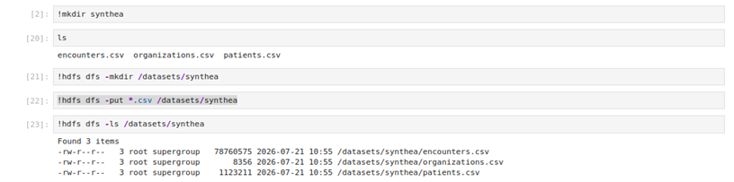

Ejercicio práctico: Gestión de datos en HDFS
En esta lección se propone un ejercicio práctico cuyo objetivo es familiarizar al estudiante con las operaciones básicas del sistema de archivos distribuido HDFS. Para ello, se utilizarán los comandos fundamentales de Hadoop que permiten crear directorios, copiar archivos, consultar su contenido y gestionar la información almacenada en el clúster.
El ejercicio se plantea de forma progresiva, comenzando con la preparación de los archivos en el sistema de archivos local y continuando con su incorporación al sistema distribuido HDFS. Posteriormente, se verificará que los datos se han almacenado correctamente y se realizarán diferentes operaciones de consulta sobre ellos.
El estudiante aprenderá a utilizar los principales comandos de HDFS para crear directorios, cargar archivos desde el sistema local, consultar su contenido y comprobar el espacio ocupado por los datos dentro del clúster Hadoop.
Tareas a realizar
- Crear, dentro de la carpeta perteneciente al volumen compartido, un directorio denominado txt.
- Cargar dentro de dicho directorio los ficheros .txt que se deseen analizar, utilizando los datos proporcionados procedentes de la fuente MEDDOCAN.
- Comprobar que el servicio HDFS se encuentra operativo mediante la interfaz web del NameNode o utilizando los comandos de administración de Hadoop.
- Crear en HDFS un directorio denominado /datasets/meddocan-hdfs.
- Copiar los archivos .txt desde el sistema de archivos local al directorio creado en HDFS.
- Verificar que los archivos se han almacenado correctamente mostrando el listado del contenido del directorio /datasets.
- Visualizar el contenido de los archivos almacenados en HDFS utilizando los comandos del sistema de archivos distribuido.
- Comprobar el tamaño de los archivos y el espacio ocupado dentro de HDFS.
- Crear, dentro de la carpeta perteneciente al volumen compartido, un directorio denominado Synthea.
-
Cargar dentro de dicho directorio los ficheros
.csv que se desean incorporar a HDFS.
En este ejercicio se utilizarán los archivos:
- encounters.csv
- organizations.csv
- patients.csv
- Crear en HDFS un directorio denominado /datasets/Synthea.
- Copiar los archivos .csv desde el sistema de archivos local al directorio creado /datasets/Synthea.
- Visualizar el contenido de los archivos almacenados en HDFS utilizando los comandos del sistema de archivos distribuido.
Solución del ejercicio
La resolución del ejercicio se realiza mediante Jupyter Notebook, utilizando la terminal integrada en el entorno Hadoop. Desde ella se ejecutan los comandos necesarios para preparar los directorios locales, crear las estructuras correspondientes en HDFS y transferir los archivos al sistema distribuido.
En primer lugar, se accede al directorio local donde se encuentran almacenados los documentos del corpus MEDDOCAN. Posteriormente, se crea el directorio correspondiente en HDFS y se utilizan los comandos de Hadoop para copiar los archivos.
Una vez disponibles los archivos .txt en el directorio local, se crea el directorio de destino en HDFS mediante el comando:
!hdfs dfs -mkdir /datasets/meddocan-hdfsA continuación, se copian los archivos de texto desde el sistema de archivos local al directorio creado en HDFS:
!hdfs dfs -put *.txt /datasets/meddocan-hdfsFinalmente, se comprueba que los archivos han sido incorporados correctamente mediante el listado del directorio:
!hdfs dfs -ls /datasets/meddocan-hdfs
Figura. Carga y verificación de los archivos del corpus MEDDOCAN en HDFS mediante Jupyter Notebook.
La ejecución mostrada permite comprobar que los archivos .txt han sido incorporados correctamente al directorio /datasets/meddocan-hdfs de HDFS. El comando hdfs dfs -ls permite consultar los archivos almacenados y verificar sus propiedades básicas, como permisos, propietario, tamaño y fecha de modificación.
Una vez completada la carga de los documentos MEDDOCAN, el ejercicio continúa con la incorporación de datos procedentes del conjunto de datos sintético Synthea.
Para esta práctica se utilizarán tres archivos CSV:
- encounters.csv
- organizations.csv
- patients.csv
Los archivos se sitúan inicialmente en el directorio local destinado a los datos de Synthea. Posteriormente, se crea en HDFS el directorio:
/datasets/SyntheaFinalmente, los archivos CSV se copian desde el sistema local al directorio de HDFS para que puedan ser utilizados posteriormente en las diferentes prácticas de procesamiento y análisis.

Figura. Carga de los archivos CSV de Synthea y verificación de su almacenamiento en HDFS mediante Jupyter Notebook.
Mediante este ejercicio, el estudiante ha realizado el ciclo básico de incorporación de información al sistema de archivos distribuido Hadoop: preparación de los datos en el sistema local, creación de directorios en HDFS, transferencia de archivos y comprobación de su almacenamiento.
Este procedimiento constituye una operación fundamental dentro de cualquier infraestructura Big Data, ya que HDFS actúa como sistema de almacenamiento sobre el que posteriormente pueden ejecutarse procesos de análisis y transformación mediante tecnologías como MapReduce y Hadoop Streaming.